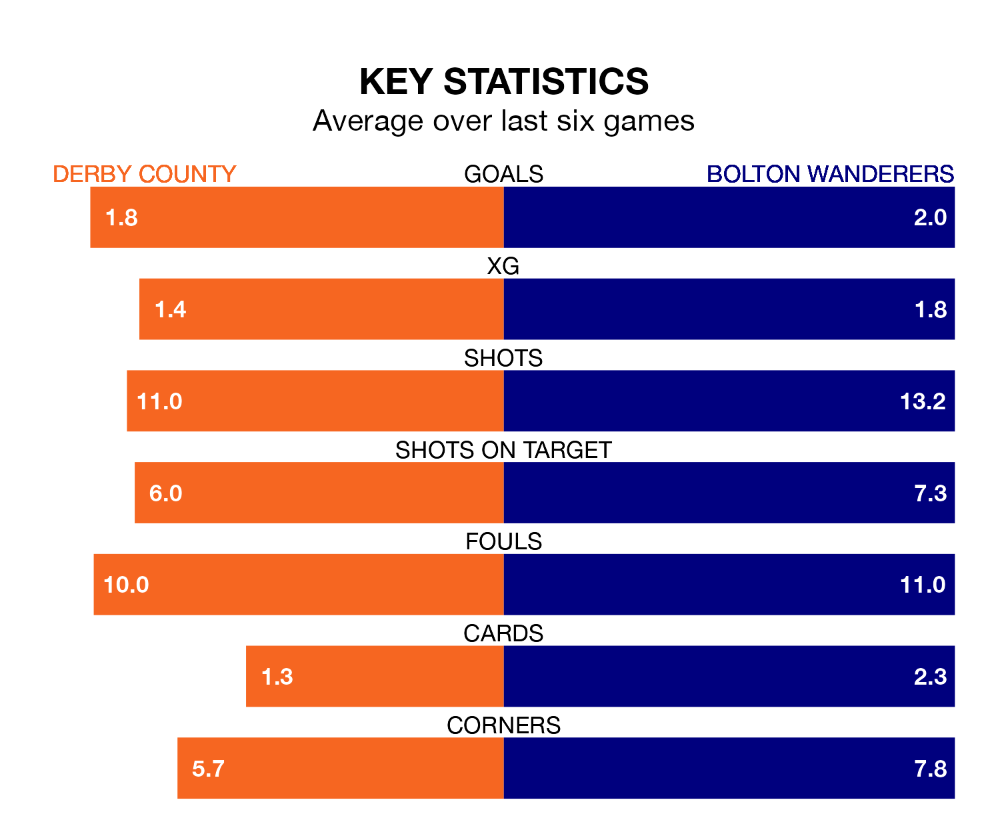

Two of EFL League One's top sides face each other at Pride Park Stadium in Saturday's kick-off, when second-placed Derby County host third-placed Bolton Wanderers.
Derby have picked up 23 wins and six draws from 38 games so far this season, and sit one point above the visitors going into the 3pm match.
Bolton, meanwhile, have won 22 and drawn eight, picking up 74 points.
With 71 goals in 38 games so far this season, Bolton are the league's second-highest scorers with 1.9 goals per game. And they are conceding fewer than average, letting in 42 goals at a rate of 1.1 per game.
Derby are also above average scorers, with 1.8 goals per game, compared to a league average of 1.3. They have conceded 0.9 goals per game.
In the last 10 years, Derby and Bolton have played each other on 11 occasions. Derby won seven of them, Bolton two, and they drew twice.
On average, the Rams scored 2.0 goals and Bolton 0.6 in those matches.
Their last meeting was on September 2, when Bolton won 2-1 at home.
With Joe Wildsmith between the sticks, County can rely on one of the league's safest pair of hands. He has kept 14 clean sheets in his 32 appearances this season, and only two other 'keepers – Portsmouth's Will Norris and Lincoln City's Lukas Jensen – have been able to prevent the opposition scoring on more occasions in EFL League One.
In Wanderers' net, Nathan Baxter has 12 clean sheets in 28 games. He has conceded a goal every 101 minutes, 20% more often than the 118 minutes between goals for Wildsmith.
The Rams are in reasonable form in EFL League One, with four wins and two losses from their last six games.
With two wins and two draws over that period, the away side's form is worse – they have taken eight points from 18, compared to the hosts' 12.
Derby's last match was on Tuesday, a 2-1 win against Reading, with Conor Hourihane and Dwight Gayle getting the goals for the Rams.
Bolton beat Oxford United 5-0 last time out, also on Tuesday, with Aaron Collins, George Thomason, Josh Cogley, Josh Sheehan and Nathanael Ogbeta on the scoresheet.
Updated: 15:10 (UTC), 15/03/24